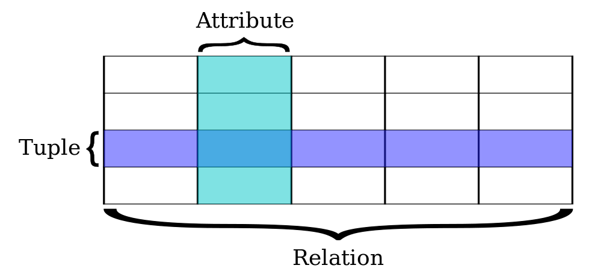
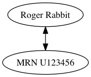
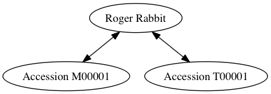
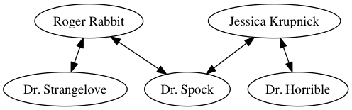
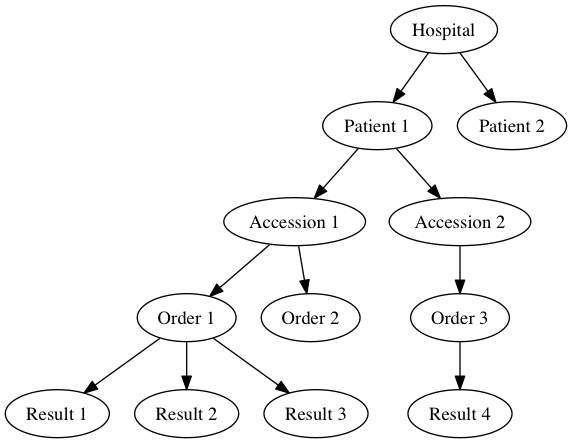

A practical introduction to databases and data management
Wed 11 June 2014 by Noah HoffmanTable of Contents
This post contains the content of a lecture prepared for Laboratory Medicine residents as part of a series on medical informatics.
Setup
Objectives
- be aware that relational databases are a thing and can be described using some terms.
- get to know the different types of relations.
- see some examples of SQL in action.
- make a connection between the above and some useful habits (and harmful anti-patterns) for organizing laboratory and experimental data.
Relational database terminology
- relational database
- a tabular database with defined "relations" (which can be described in terms of relational algebra) among elements within and between tables.
- row
- contains a tuple or record representing a single item.
- column
- represents an attribute or field and corresponds to a labeled element of a record; all elements within a column are of the same data type.
- table
- a set of rows and columns.

Figure 1: Components of a table from a relational database. Source: wikipedia
- primary key
- a field (or multiple fields in combination) that uniquely identify a row. Can either be natural (i.e., consisting of attributes that already exist in the table), or surrogate (i.e., a new attribute with no "real world" meaning created for the purpose).
| pkey | mrn | name | dob | sex |
| 1 | U123456 | Roger Rabbit | 1939-04-01 | M |
| 2 | U654321 | Jessica Krupnick | 1924-10-27 | F |
- index
- a data structure that improves the efficiency of data manipulation by reorganizing or clustering elements, typically as a tree.
Relations
one to one
- describes the relationship between two or more elements in which each element uniquely identifies the other (likely to be true only in a specific context).
- represented by elements in the same row
- eg, name <–> mrn (but is this really true?)
Graphically:

And in our database:
select mrn, name
from patients;
| mrn | name |
| U123456 | Roger Rabbit |
| U654321 | Jessica Krupnick |
one to many
- in the context of a database, is represented by a pair of tables, in which an element or row can be related to multiple rows in another table

In our database:
select name, mrn, accession
from patients join results using(
mrn
)
group by accession order by mrn;
| name | mrn | accession |
| Roger Rabbit | U123456 | M00001 |
| Roger Rabbit | U123456 | T00001 |
| Jessica Krupnick | U654321 | M00002 |
| Jessica Krupnick | U654321 | T00002 |
many to many
- an entity in table A maps to more than one entity in table B, and vice-versa.
- a many-to-many relation between two tables is represented via a third junction table or cross-reference table.
- for example, each patient may see more than one physician, and each physician sees many patients.

In our relational database, this relation requires three tables, one for each of patients and physicians:
| pkey | mrn | name | dob | sex |
| 1 | U123456 | Roger Rabbit | 1939-04-01 | M |
| 2 | U654321 | Jessica Krupnick | 1924-10-27 | F |
| doc_id | doc_name |
| P01 | Dr. Spock |
| P02 | Dr. Horrible |
| P03 | Dr. Strangelove |
And a junction table defining the many-to-many relationships:
select *
from physician_patient;
| doc_id | mrn |
| P01 | U123456 |
| P01 | U654321 |
| P02 | U654321 |
| P03 | U123456 |
Now we can view all physician-patient relationships using a three-way join
select *
from patients join physician_patient using(
mrn
) join physicians using(
doc_id
);
| pkey | mrn | name | dob | sex | doc_id | doc_name |
| 1 | U123456 | Roger Rabbit | 1939-04-01 | M | P01 | Dr. Spock |
| 1 | U123456 | Roger Rabbit | 1939-04-01 | M | P03 | Dr. Strangelove |
| 2 | U654321 | Jessica Krupnick | 1924-10-27 | F | P01 | Dr. Spock |
| 2 | U654321 | Jessica Krupnick | 1924-10-27 | F | P02 | Dr. Horrible |
Data types
Most databases and programming languages make a distinction between various data types (integers, real numbers, text, binary data, etc). Why is this important?
- Operations may be defined for some data types but not others (eg, division makes sense for real numbers but not text).
- Different data types require different amounts of space for storage. For example, in MySQL, a column containing an integer representation of true/false (eg, a boolean) requires only 1 byte per element, whereas the string "True" will typically occupy at least 4 bytes. This can become important when anticipating database requirements or managing large amounts of data.
SQL
SQL (originally SEQUEL for Structured English Query Language) is a programming language for managing relational databases. Although versions of SQL are defined in internationally-recognized standards, various dialects are used depending on the implementation. Many relational database programs are out there. Some examples of relational database products using SQL that you are likely to come across include:
- PostgreSQL (free/open source)
- SQLite (free/open source)
- MySQL (free/open source)
- SQL Server (Microsoft, one of its flagship products)
- Various Oracle products (expensive and enterprise-y)
SQL was designed to be accessible to non-technical users!
Of these database engines, SQLite is probably the easiest to try out - unlike the others, the database consists of a single, portable file that can be accessed using either a command line interface or various GUI's available for your favorite platform (SQLite is also found pretty much everywhere). For example, here is the SQLite database used for the examples in this post. If you're on a Mac, try this after downloading to your Downloads folder:
- open Terminal.app (press CMD+SPACE and type Term…)
- type this:
cd ~/Downloads
sqlite3 results.db
You should see something like this:
SQLite version 3.7.13 2012-07-17 17:46:21 Enter ".help" for instructions Enter SQL statements terminated with a ";" sqlite>
Go ahead and try out some of the examples above. You can also download a GUI database browser (Wikipedia has a list) and try out your queries there.
Some examples of relational database operations using SQL
select
select *
from results;
| mrn | accession | date | battery_code | test_code | value | flag |
| U123456 | M00001 | 2014-06-02 | BMP | GLU | 135.0 | H |
| U123456 | M00001 | 2014-06-02 | BMP | K | 4.0 | |
| U123456 | T00001 | 2014-06-03 | CMP | GLU | 90.0 | |
| U123456 | T00001 | 2014-06-03 | CMP | K | 2.7 | L |
| U654321 | M00002 | 2014-06-02 | CMP | GLU | 85.0 | |
| U654321 | M00002 | 2014-06-02 | CMP | K | 4.1 | |
| U654321 | T00002 | 2014-06-03 | BMP | GLU | 75.0 | |
| U654321 | T00002 | 2014-06-03 | BMP | K | 4.2 |
select *
from results
where test_code = 'GLU' order by date;
| mrn | accession | date | battery_code | test_code | value | flag |
| U123456 | M00001 | 2014-06-02 | BMP | GLU | 135.0 | H |
| U654321 | M00002 | 2014-06-02 | CMP | GLU | 85.0 | |
| U123456 | T00001 | 2014-06-03 | CMP | GLU | 90.0 | |
| U654321 | T00002 | 2014-06-03 | BMP | GLU | 75.0 |
join
select patients.name, results.date, tests.test_name, results.value, results.flag
from results join tests using(
test_code
) join patients using(
mrn
)
where test_code = 'K';
| name | date | test_name | value | flag |
| Roger Rabbit | 2014-06-02 | Potassium | 4.0 | |
| Roger Rabbit | 2014-06-03 | Potassium | 2.7 | L |
| Jessica Krupnick | 2014-06-02 | Potassium | 4.1 | |
| Jessica Krupnick | 2014-06-03 | Potassium | 4.2 |
group and aggregate
select name, test_code, min(
value
)
from patients join results using(
mrn
)
group by mrn, test_code;
| name | test_code | min(value) |
| Roger Rabbit | GLU | 135.0 |
| Roger Rabbit | K | 2.7 |
| Jessica Krupnick | GLU | 75.0 |
| Jessica Krupnick | K | 4.1 |
Hierarchical databases
Hierarchical databases organize data in a tree-like structure. Data is represented as a graph of one-to-many (patent -> child) relations.

- hierarchical databases are arguably extremely well-suited for modeling healthcare data.
- can be used to efficiently represent data that would otherwise require many tables in a well-normalized relational database.
- depending on the structure of the hierarchy, certain queries can be extremely efficient: eg, all orders for Patient 1 can be found by traversing only the subtree containing data for that patient, which might represent only a tiny fraction of the entire database.
- other sorts of queries can be extremely inefficient: eg, finding all results of a certain type might require traversal of the entire tree!
- guess what: major healthcare applications such as the VA system (VistA), Sunquest FlexiLab, and many Epic products use a hierarchical database implemented using the MUMPS language.